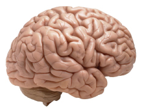
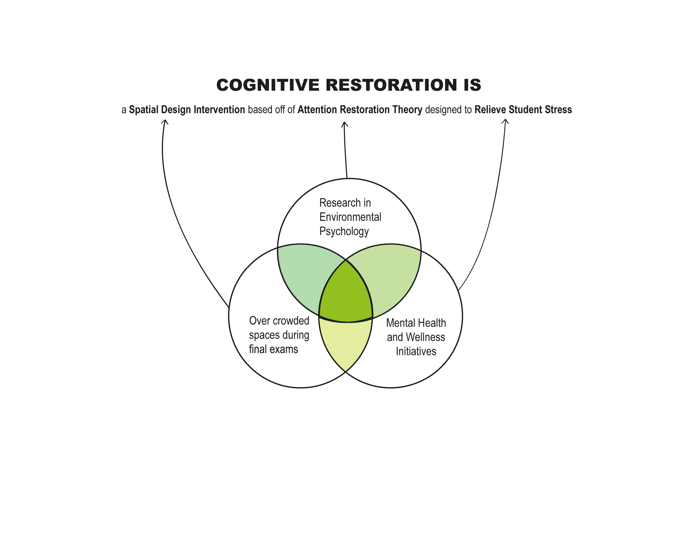
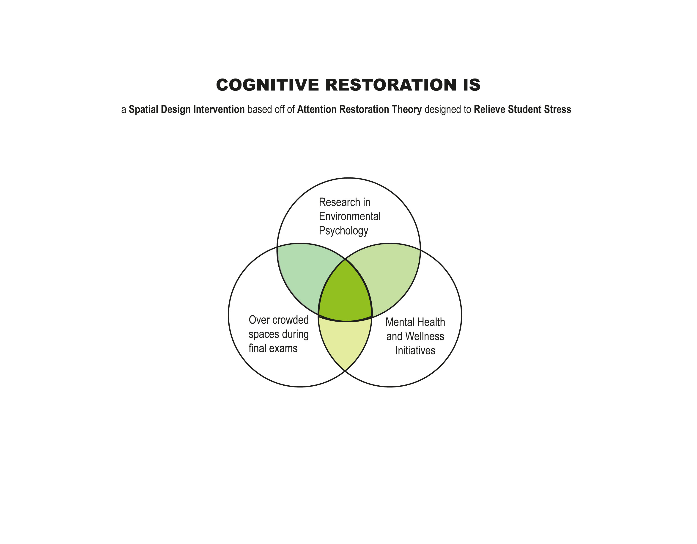
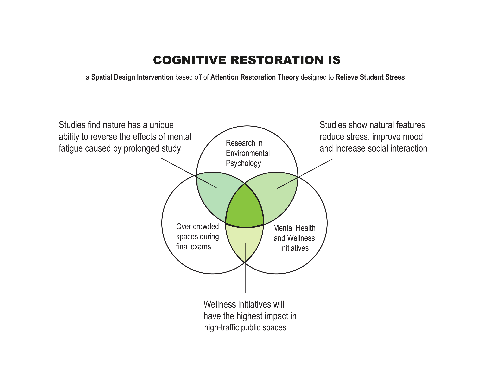

is the process that allows your brain to recover from mental fatigue
mental fatigue is what happens when you force your brain to concentrate for long periods of time without rest.

Your brain is like a rechargable battery, you can only concentrate for so long without recharging
But there are ways to help your brain recharge faster and more efficently...
Environmental Psychologists have studied how different environments have an impact on this process of fatigue and recovery, and have shown that environments in nature are very unique...
Nature is very high in all the environmental characteristics that help our brains recharge.
After studying this for years, Environmental psychologists have developed something called
Attention Restoration Theory
says that people can concentrate better after spending time in nature, spending time near natural elements, or even just looking at scenes of nature.
is an installation at Cornell University designed to provide a small dose of nature’s restorative benefits to busy stressed out students.
This installation is a place-based mental health and wellness initiative, led by two students, with the support of the Cornell Council on Mental Health.
The idea was built off of research in environmental psychology and human-environment relations.
Each of the five location were chosen because they are consistently overcrowded with stressed out students during final exams week.



will be up through December 14th at Olin Library, Mann Library, Duffield Atrium, Physical Sciences Building, and Appel Commons.
will be open through December 14th, please check back soon for photos and more!